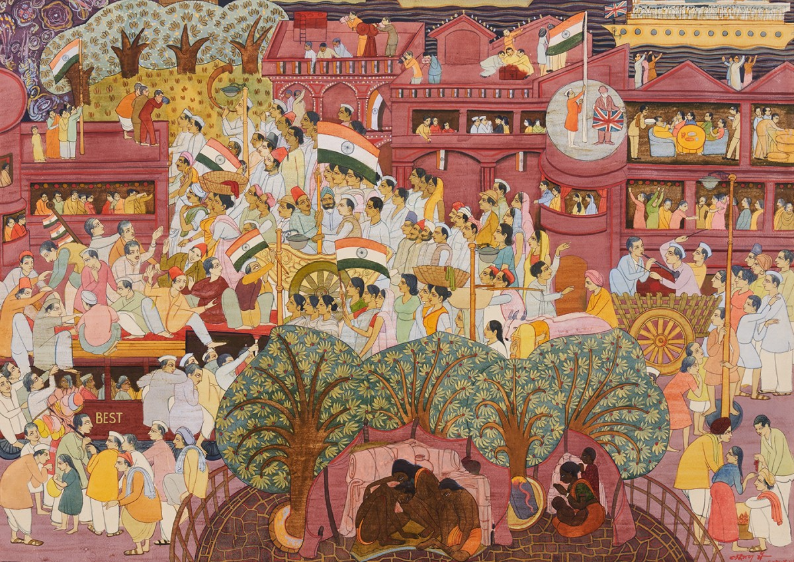

Works from the
Family Collection
A selection of original canvases, signed by the artist.

India's Independence Movement
A vast, intricately composed scene capturing the euphoria of India's freedom — crowds surging with tricolours, flags streaming above colonial buildings, the British standard coming down. Rendered in Pai's signature miniature-influenced style: flat, jewel-bright colour, angular figures, and an almost architectural command of a teeming multitude. One of his most celebrated historical paintings.

Ganesha
A luminous, devotional Ganesha in swirling oranges and reds — at once monumental and tender. The elephant-headed deity fills the canvas with joyful abundance, his large belly a symbol of prosperity, his raised hand conferring blessing. Painted in Delhi, July 2011, and signed by the artist.

Cosmic Composition
A sweeping panoramic work in Pai's mature abstract style — cosmic eyes gaze from a swirling universe of blue-green and deep red, a central mandala-like form anchoring an eruption of colour and line. Painted in the USA in 2010, this large-format canvas demonstrates the fearless energy Pai maintained into his eighties.

Abstract Face — Mask Series
Bold geometric abstraction referencing tribal mask traditions and the angular forms of ancient Indian temple sculpture. The face dissolves into pure structure — squares within squares, a third eye, a burst of pink-red petals — while the palette moves from cool architectural blue-grey into warm, organic pink. Signed and dated USA, 2009.